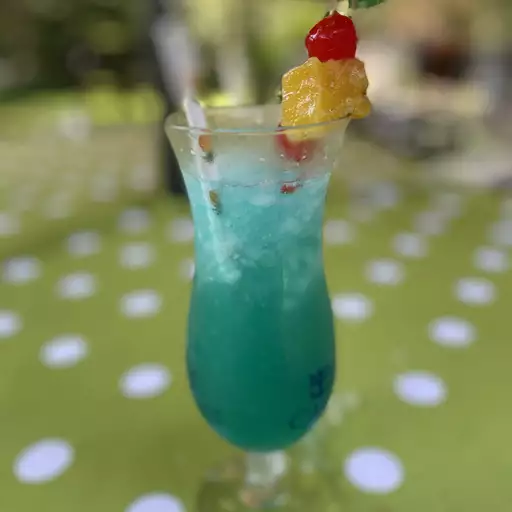
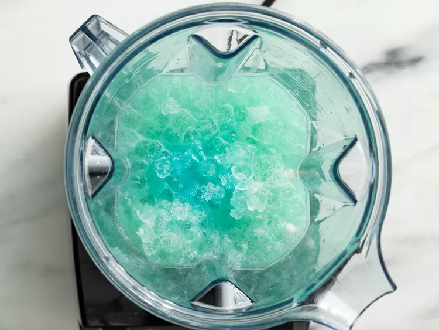
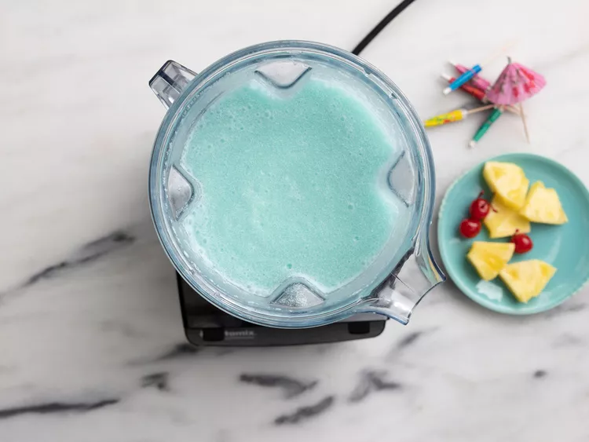
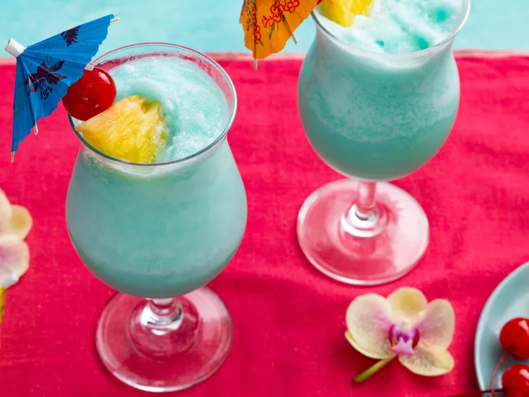

Blue Hawaiian Cocktail
Home

Here we go! The Blue Hawaiian Cocktail!
The Blue Hawaiian is a fun, refreshing cocktail made with rum, cream of
coconut, pineapple juice, and Curacao liqueur to create its legendary blue
color. Invented in Hawaii in the 1950s, this tiki cocktail will have you
crooning like Elvis!
What You'll Need
-
Rum: This recipe calls for light rum, which is what we
recommend. But some reviewers like to use coconut rum to add a more
fruity flavor.
-
Blue Curacao: Blue Curacao liqueur gives the Blue
Hawaiian its iconic color.
-
Pineapple Juice: Pineapple juice adds a hint of
tropical flavor.
-
Cream of Coconute: You can find cream of coconut with
the non-alcoholic mixers in the grocery store.
-
Garnishes: Garnish your cocktail with a slice of
pineapple and a maraschino cherry.
Ingredients
- 1 cup crushed ice
- 2 fluid ounces pineapple juice
- 1 fluid ounce light rum
- 1 fluid ounce blue Curacao liqueur
- 1 fluid ounce cream of coconut
- 1 pineapple slice for garnish
- 1 maraschino cherry for garnish
Steps
-
Combine crushed ice, pineapple juice, rum, blue Curacao, and cream of
coconut in a blender.

- Blend on high speed until smooth and an even blue color.

-
Pour into a chilled highball glass. Garnish with a slice of pineapple
and a maraschino cherry.

Nutrition Facts
- Calories: 369
- Fat: 7g
- Carbs: 49g
- Protein: 0g